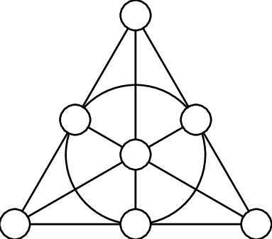
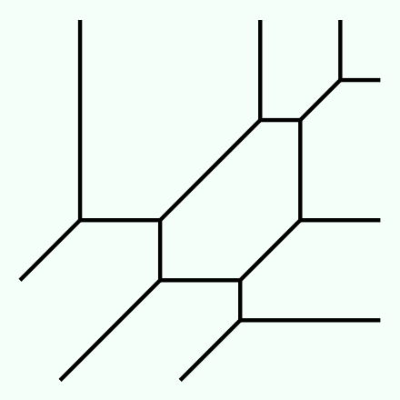

I'm still trying to figure out what my primary area of interest is. My undergraduate senior thesis (advised by Dr. Renzo Cavalieri at Colorado State University) was on covers of abstract tropical curves, which falls quite squarly in the world of algebraic geometry. However, I am not set on that. I've also taken an interest in algebraic combinatorics over the past year or so. I'm excited to see what speaks to me over the next few years! Both of the below pictures were taken from their respective Wikipedia articles.
 June 19, 2024, Spec\((\bar{\mathbb{Q}}(2\pi i))\), Fields Institute, Toronto, ON.
Covers of Abstract Tropical Curves